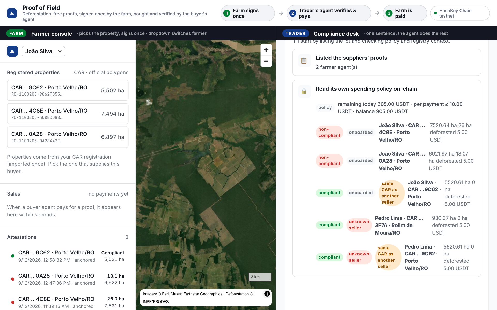

Proof of Field
The compliance paper behind every soy and beef shipment, turned into a portable proof: signed once by the farm, verified by anyone, bought by AI agents.
Built at the EAG Global Buildathon Floripa · Live on HSK Chain testnet
1Six companies move most of Brazil's soy and beef. Every market now wants the same proof, per farm.


Today: three weeks, per buyer, per season.
Compliance e-mails each supplier for CAR, maps, documents.
The entire map, to a stranger. Again for the next buyer.
Crosses the map with government data. Charges per farm.
Nobody outside can verify it. Bank asks again. Importer asks again.
With Proof of Field: signed once, verified by anyone, in minutes.
The middleman did four jobs: collect, check, be trusted, repeat. Agents collect. Open software checks. Anyone verifies. Done once. The farm is paid per use.
4Where the AI sits, where the chain sits
A Claude agent gets one sentence from the compliance desk and works with five tools:
- 📋list the suppliers' proofs
- 🔒read its own spending policy on-chain
- 🛒buy a proof over HTTP 402
- ✋refuse, with a written reason
- 📄write the compliance dossier
Handles the messy part: hundreds of farms, edge cases, conflicting instructions. Explains every decision.
decides.
enforces.
HashKey Chain holds three things the AI cannot change:
- 🔗Registry · every proof's hash and who anchored it. Anyone verifies.
- 💵Stablecoin · the only way one program pays another, anywhere.
- 🛡️AgentWallet · daily limit, per-payment limit, allow-listed suppliers.
Even if the model is tricked, the worst it can do is skip a purchase. It cannot pay a stranger or exceed the limit.
The check runs on the farm's own computer. What needs the chain is the trade: two companies that don't trust each other, two programs paying each other, and an AI holding money it cannot misuse.
5
Farm: pick the property, sign once.
Trader: one sentence.
- Two farmers, four registered properties from the public CAR registry: one clean, two with post-2020 clearing, and one from a supplier the trader never onboarded.
- Before contracting the harvest, the buyer's agent reviews the ticked properties: clears the clean one, refuses the other three, and says why. Only onboarded suppliers get paid, whatever their proof says.
- Every step is a transaction on HSK Chain you can open in the explorer.
Under the hood: real data, real chain, real decisions

Stack: Solidity + Foundry (7 tests) · EIP-712 attestations · x402 over HTTP · Claude agent with tools · MapLibre console · HSK Chain testnet. Honest limits: settlement by tx hash (EIP-3009 next); the key↔CAR binding is the buyer's onboarding today.
7Adoption path: where the pain is sharpest first, traders last.
A co-op answers for every member farm, to every buyer, every season. Today: spreadsheets and e-mail. One farmer agent per member, one proof per property, and the co-op's paperwork collapses.
Rural credit requires deforestation-free evidence. Banks buy the same proof the trader buys, verify it on-chain, and stop paying per-farm vendors.
Once proofs already circulate among their suppliers, the trader's compliance desk plugs in a buyer agent and clears its suppliers in minutes instead of weeks, before every contract and again each season.
Built to scale: every farm runs its own agent, every buyer its own; one public registry; contracts and agents generic enough for any private dataset sold as a proof.
Pilot partners wanted: a cooperative, a bank, a trader · github.com/Muril0zz/proof-of-field
8Roadmap
On-chain attestation "key ↔ CAR holder" issued by a co-op, a bank, or the farmer via gov.br. Buyer agents require it from issuers they trust. Then zkTLS proof of the SICAR login, no issuer at all.
DETER real-time alerts and IBAMA embargoes in the check. Full x402: EIP-3009 gasless settlement and a facilitator. BRL stablecoin or automatic off-ramp so farms are paid in reais.
Rondônia first: a cooperative hosting agents for its members, a bank using the same proofs for rural credit, a trader plugging a buyer agent into its compliance desk. Then Mato Grosso and Goiás, already covered.
Later: ZK proof of "empty intersection" so even the hectares stay private · Sentinel-2 change detection on the farm's machine · cattle passports as a second asset class.
9Questions we expect
Today: the buyer's own onboarding, same as now (contract, CPF, CAR number; the key is registered like a bank account). Next: an on-chain identity attestation from the co-op, a bank or gov.br. The protocol doesn't change; identity is one more check.
The check runs on the farm's computer. The trade needs the chain: two companies that don't trust each other, two programs paying each other, and an AI holding money it cannot misuse. That needs a ledger nobody owns, a currency machines can send, and a spending policy nobody can quietly edit.
The data is public; the declaration of origin and the accountability are not. The farmer signs which property supplies this buyer and stands behind it. Signed once, reused by every buyer, paid per use.
No: the proof uses the official CAR polygon and carries the CAR number. Anyone can hash the public polygon and compare.
It's INPE's official annual map, minimum 6.25 ha. We add indigenous lands and conservation units today, DETER alerts and IBAMA embargoes next. Outside covered data we refuse to attest: absence of data is not absence of deforestation.
Large farms yes; small ones through their cooperative, authorizing from a phone. USDT is the testnet stand-in; production is a BRL stablecoin or an automatic off-ramp. Not solved yet, and we say so.
402 body and accepts[] follow x402 v1; settlement is an on-chain transfer referenced by tx hash, replay-protected. EIP-3009 gasless settlement is next.
No marketplace: a buyer asks only the suppliers it already has contracts with; their agent address is registered at onboarding, like a bank account. The farm's key is its login, properties come from its own SICAR export, and a cooperative can host the agent for small farms.
Cooperatives (one compliance desk for hundreds of members), then banks (need the proof to lend), traders last, once proofs already circulate among their suppliers.